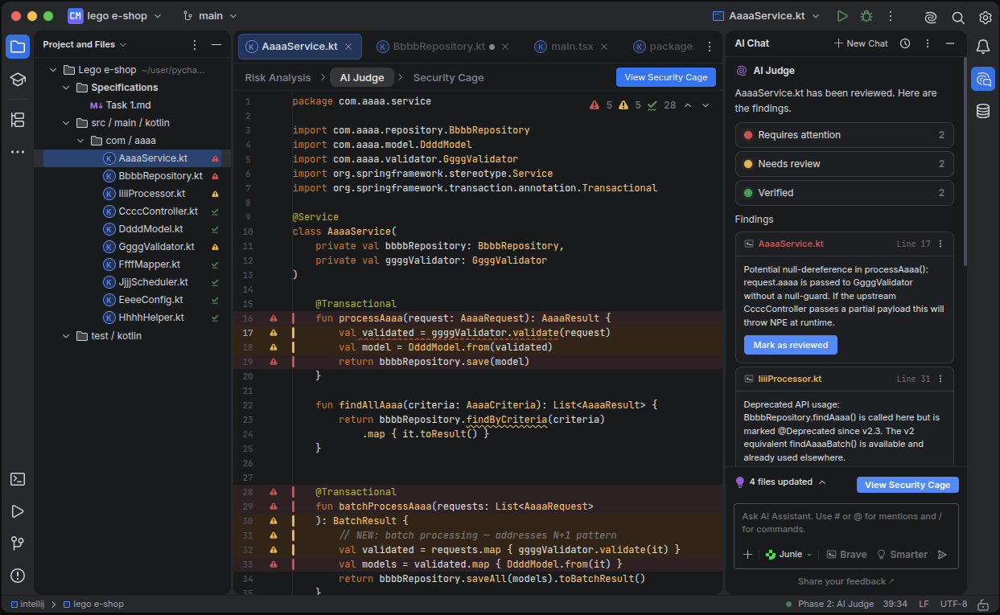

JetBrains × Lund University · Research publication · 2026
Designing code review for agent-generated changes
I translated 64 practitioner problems into a validated IDE workflow and the reusable prototype system that became the foundation for a full product.
17discovery participants
43validation participants
72%willing to use the proposed tool
